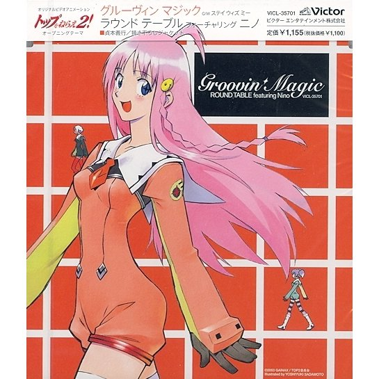
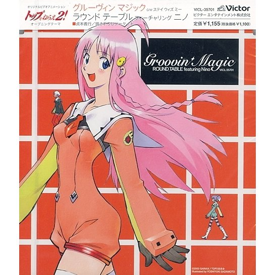

Day 95

ROUND TABLE feat. Nino ◆ Groovin’ Magic ◆ 2005
以为昨天就是可爱的极限了吗，今天的更可爱了！可爱到我内心的直男一开始有点不好意思听这首歌hhh 我是看这篇博客了解到这首歌的：ROUND TABLE featuring Nino -- Groovin' Magic 。跟朋友说以后才知道是她很喜欢的乐队，拍照会用 ROUND TABLE 找可爱的感觉。
他们的另一首歌也很可爱：Let Me Be With You。

ROUND TABLE feat. Nino ◆ Groovin’ Magic ◆ 2005
以为昨天就是可爱的极限了吗，今天的更可爱了！可爱到我内心的直男一开始有点不好意思听这首歌hhh 我是看这篇博客了解到这首歌的：ROUND TABLE featuring Nino -- Groovin' Magic 。跟朋友说以后才知道是她很喜欢的乐队，拍照会用 ROUND TABLE 找可爱的感觉。
他们的另一首歌也很可爱：Let Me Be With You。